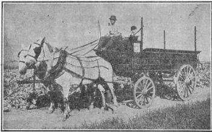
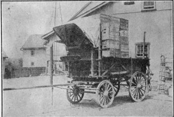
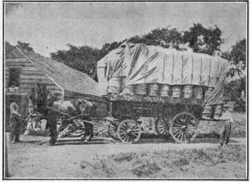
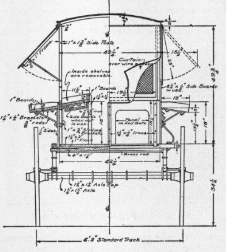

230. Market Wagons
Description
This section is from the book "Vegetable Gardening", by Ralph L. Watts. Also available from Amazon: Vegetable Gardening.
230. Market Wagons
The size of the market wagon will be determined by the number of horses to be used, character of the road, method of selling and volume of produce to be handled. The carrying capacity of a one-horse wagon should seldom be less than 1,500 pounds, and on hard, level, smooth roads, it should be from 2,000 to 3,000 pounds, especially if the vegetables are to be shipped or sold at wholesale. Wagons for two and three horses are made to carry from lyZ to about 8 tons, a three-ton wagon perhaps being the most popular size. A large and satisfactory wagon recently built by a Boston market gardener weighs 4,900 pounds; the axles are 2 1/2 inches in diameter; the springs are 3 inches wide, front springs 18-ply and rear springs 19-ply; it is drawn by three horses hitched abreast. On it 275 bushel boxes (16x16x8 inches) of onions have been hauled to market, and at another time 350 bushel boxes of bunched beets were transported.
Fig. 52. Philadelphia market wagon.
Market wagons differ widely in style. The Boston platform type is highly satisfactory for hauling bushel boxes. A narrow strip along the upper edge of the bed on each side slightly tilts the outside tier of boxes toward the center of the bed, but the loads are always roped.
Fig. 53. PHILADELPHIA market wagon partly loaded with boxes.
A wagon used in New Jersey is made to carry 180 half or -Hi-bushel baskets. This is a typical New Jersey wagon used in hauling produce to the Philadelphia market. Figure 52 shows the type of wagon used in Philadelphia County, built to carry about 4 tons. Figure 53 shows the same type of wagon loaded with boxes. A canvas top over the driver furnishes protection in stormy weather. Figure 54 represents the type of wagon used on Long Island for hauling barrels. On the largest wagons of this type 110 barrels are sometimes loaded. A canvas covering is always thrown over the load for protection and to hold the barrels in place.
Fig. 54. LONG ISLAND MARKET WAGON.
Figure 55 shows a wagon which is especially convenient for retailing.
Market wagons should be planned with the utmost care, size and style being the first essentials to consider. As a general rule market wagons are too small. The type of construction must conform to the style of packages to be hauled. The Boston wagon described is excellent for boxes and rectangular crates, but it would be unsatisfactory for upright hampers and tomato baskets. The length, width and height of the bed should be carefully planned to accommodate the packages to be hauled without loss of space. Improvised racks or shelvings are necessary in the transportation of many kinds of packages. Moderately low platform wagons are the most serviceable. All wagons should be washed frequently and painted as often as necessary to keep them looking bright. A neat wagon, tastefully painted and lettered, attractive horses and harness, draw attention and command the respect of other classes of business men.
Fig. 55. retail wagon.
Continue to:
Tags
plants, crops, gardening, cultivated, harvesting, food ,greenhouses, fertiliser, vegitables